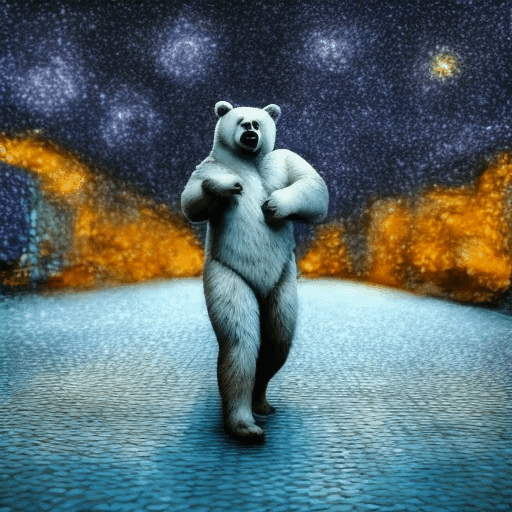

Recent advancements in text-to-image diffusion models have markedly expanded the potential for generating images based on textual descriptions. Yet, the extension of these capabilities to video generation poses significant challenges, particularly in achieving stylistic consistency across video frames. Traditional approaches often require extensive training processes and face difficulties in maintaining a coherent artistic style throughout the sequence, especially when attempting to emulate a specific style referenced by an image. To bridge this gap, we introduce StyleT2V0, a zero-shot methodology that enables the generation of videos directly from textual prompts while ensuring stylistic alignment with a designated reference image. By integrating shared attention mechanisms within the generation process, our approach guarantees that each frame not only adheres contextually to the textual description but also maintains stylistic coherence with the reference image, all without the need for additional model training. This method represents a significant step forward in simplifying the video production process from textual descriptions, offering a streamlined and efficient solution for creating stylistically consistent video content.
In StyleT2V0, we extend the Text2Video-Zero framework by embedding a novel shared attention mechanism tailored for style consistency. This innovation enables the generation of video sequences that are not only contextually aligned with textual prompts but also exhibit a uniform style, matching a reference image. By altering the conventional attention computation within the network, StyleT2V0 integrates style features from a designated reference image, effectively synchronizing the visual style across all frames. This approach ensures that each frame of the video not only responds accurately to the text input but also consistently reflects the aesthetic qualities of the reference style.
Architectural Overview of the StyleT2V0 Method: This diagram illustrates the integration of the shared attention mechanism within the Text2Video-Zero framework to enhance style consistency across video sequences. The method employs Adaptive Instance Normalization (AdaIN) to adjust the query (Qi) for each frame Fi by blending style features from a designated reference image (Qr), ensuring stylistic uniformity and alignment with textual prompts. Keys (K) and values (V) are also adapted using AdaIN, aligning them with the style of the reference image while maintaining content continuity from the first frame (K1 and V1). The resultant attention mechanism applies these style-consistent queries, keys, and values to produce a video sequence where each frame is coherent in both style and content.
| "Martiros Saryan" | "A cat playing with a ball of yarn" | "A runner jogging along a river at dawn" | "A dog running along a beach" |
| "Minas Avetisyan | "A couple walking hand in hand on the beach at sunset" | "A teenager skateboarding down a city street" | "A unicorn dancing in times square" |
| "Van Gogh" | "A horse galloping on a street" | "A painter working on a canvas in a sunny studio" | "An astronaut is skiing on the moon" |
 |
|||
| "Watercolor" | "A gardener planting flowers in a blooming garden" | "Leaves falling from trees on a windy autumn day" | "A child blowing bubbles in a park" |
| "Martiros Saryan | "A bear dancing on the concrete" | "A panda dancing on the concrete" |
|  | ||
| "Van Gogh" | "A bear dancing on the concrete" | "A panda dancing on the concrete" |
 |
||
| "Martiros Saryan | "A butterfly" | "A deer" |
| "Van Gogh" | "A butterfly" | "A deer" |
| "Martiros Saryan | "A butterfly" | "A deer" |
| "Van Gogh" | "A butterfly" | "A deer" |
BibTex Code Here